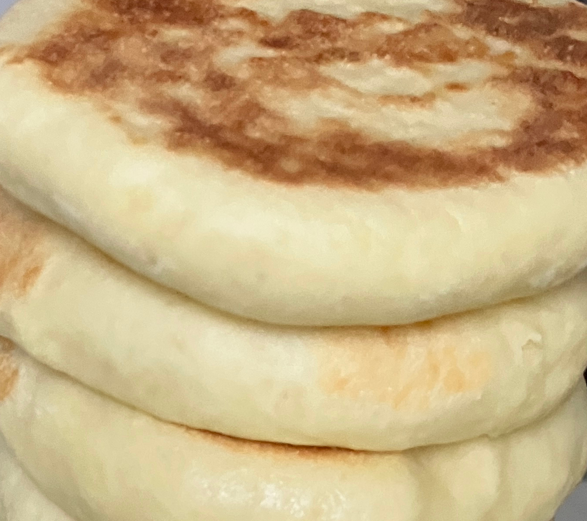

奶香鸡蛋软饼 ★ Creamy Breakfast Pancakes
 3-4 servings
3-4 servings 2 hours
2 hours-
 Xiaohongshu
Xiaohongshu
 Sweet
Sweet
奶呼呼松软的早餐饼

- 360 g 中筋面粉
- 1 个 鸡蛋
- 15 g 奶粉
- 15 g 糖
准备中筋面粉，鸡蛋，奶粉，糖，一起加进厨师机的搅拌碗中。
- 140 g 温水(不要太热)
- 4 g 酵母
取温水(不要太热)，加入酵母，用筷子搅拌均匀，一起加入厨师机。
- -—–
所有食材混合，用厨师机搅拌，揉成光滑的面团，放置30分钟预备，或者待面团发为原来两倍大小。
- -—–
取出面团，按压搓揉排气，然后均匀分成8份。
- -—–
每份压揉至小球，然后按压，用擀面杖擀成小圆饼，有2-3硬币厚度。
- -—–
从取出面团到擀成小球，直至入锅，大约一共最多20分钟，要不然容易发过。
- -—–
选用厚底不粘锅，不锈钢锅容易传热快，易糊。
- -—–
中小火将锅加热，饼子入锅保持形状，随时翻面，饼子表壳发脆，边缘按压有弹回，两面有金黄色，表示饼子好了。
- -—–
饼子最初入锅时，可小火加盖闷30秒，再开盖中小火，可以快速使得一面金黄，然后再来翻面，加快烹饪进程。
- -—–
出锅后放凉即可食用，放置。